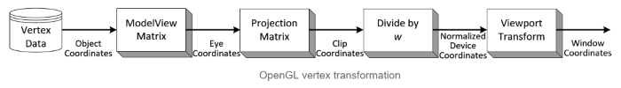
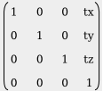
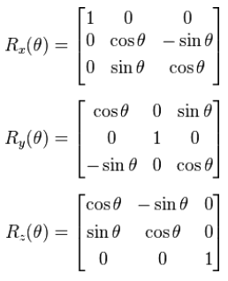

and Primitive Assembly operation in OpenGL pipeline before raterization process.

Translation
A translation moves a vector a certain distance in a certain direction.
Rotation
A rotation transformation rotates a vector around the origin (0,0,0) using a given axis and angle.

The pixels in the texture will be addressed using texture coordinates during drawing operations.
These coordinates range from 0.0 to 1.0 where (0,0) is conventionally the bottom-left corner and
(1,1) is the top-right corner of the texture image.
GL_REPEAT: The integer part of the coordinate will be ignored and a repeating pattern is formed.
GL_MIRRORED_REPEAT: The texture will also be repeated, but it will be mirrored when the integer part of
the coordinate is odd.
GL_CLAMP_TO_EDGE: The coordinate will simply be clamped between 0 and 1.
In a 3d-rendering engine, when an object is projected on the screen,
the depth (z-value) of a generated pixel in the projected screen image is stored in a buffer (the
z-buffer or depth buffer).
A z-value is the measure of the perpendicular distance from a pixel on the projection plane to its
corresponding 3d-coordinate on a polygon in world-space.
When viewing an image containing partially or fully overlapping opaque objects or surfaces,
it is not possible to fully see those objects that are furthest away from the viewer and behind other
objects